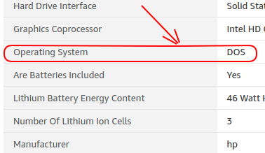

ସୂଚୀପତ୍ର
ଲାପଟପ ଏକ କମ୍ପ୍ୟୁଟର ଯାହା ସହିତ କମ୍ପ୍ୟୁଟରର ପ୍ରାୟ ସମସ୍ତ ପାର୍ଟ୍ସଗୁଡିକୁ ଗୋଟିଏ ଉପକରଣ ସହିତ ଯୋଡା ଯାଇଥାଏ, ଏଣୁ ଏହାକୁ ନେବା ଆଣିବାରେ ସହଜ ହୋଇଥାଏ । ଆପଲ କମ୍ପ୍ୟୁଟର ଦ୍ଵାରା ନିର୍ମିତ ଲ୍ଯାପଟପକୁ ମାକବୁକ ବା ମାକ (mac) ବୋଲି କୁହାଯାଏ ।
ସର୍ବପ୍ରଥମେ ଅପଣ କେଉଁ ଅପରେଟିଂ ସିଷ୍ଟମ ବ୍ୟବହାର କରିବାକୁ ଚାହୁଁଛନ୍ତି, ତାହା ନିର୍ଣୟ କରନ୍ତୁ ।
ଯଦି ଆପଣ ନୀତିଦିନିଆ କାର୍ଯ୍ୟ କରିବା ସହିତ, ଗେମ୍ସ ଖେଳିବା ପାଇଁ ଚାହୁଁଛନ୍ତି ତେବେ ୱିନଡୋଜ (windows)ର ଚାହିଦା ସର୍ବାଧିକ । ଏପରି କୌଣସି କାର୍ଯ୍ୟ ନାହିଁ ଯାହାକି ୱିଣ୍ଡୋଜ କଂପ୍ୟୁଟରରେ ହୋଇ ପାରେନା । ତେବେ ୱିଣ୍ଡୋଜ ସଫ୍ଟୱେର ଯେକୌଣସି ସ୍ଥାନରୁ ଡାଉନଲୋଡ କରି, ଇନଷ୍ଟଲ (install) କରିବାଦ୍ଵାରା କମ୍ପ୍ଯୁଟରକୁ କ୍ଷତି ପହଁଚୁଥିବା ସଫ୍ଟୱେର ଯଥା ଭାଇରସର ଭୟ ଥାଏ । ଏହା ଛଡା ନୂଆ ୧o ସିଷ୍ଟମରେ କିଛି ଫାଲତୁ ପ୍ରୋଗ୍ରାମ୍ସ ଯେପରି କୋରଟାନାକୁ ବନ୍ଦ କରି ହୁଏନା । ଏହି କୋରଟାନା ଆପ ଟି ସର୍ବଦା ପଛରେ ଚାଲିବା ସହ ସଦାସର୍ବଦା ଆପଣଙ୍କ ଉପରେ ନଜର ରଖିଥାଏ, ଏପରିକି କଥା ମଧ୍ୟ ରେକର୍ଡ କରେ । ଏହା ଛଡା ଅପଡେଟ ଡାଉନଲୋଡ଼ ଓ ଇନଷ୍ଟାଲ ବାଧ୍ୟତା ମୂଳକ କରିଦିଅ ଯାଇଥିବାରୁ ଏହି ସିଷ୍ଟମ ବହୁ ଲୋକଙ୍କ ନାପସନ୍ଦ ।
-
ସେହିପରି ଗ୍ରାଫିକ୍ସ ଓ ଏଡିଟିଂ ତଥା କୋଡିଙ୍ଗ ଯେପରିକି ଗେମ୍ସ କିମ୍ବା ୱେବସାଇଟ ଇତ୍ୟାଦି ତିଆରିକରିବା ମ୍ୟାକବୁକ ସବୁଠାରୁ ଉତ୍ତମ । ଏହାର ଅପରେଟିଂ ସିସ୍ଟେମ ଇଉନିକ୍ସରେ ତିଆରି ଓ ହାର୍ଡୱେୟାର ଆପଲ କମ୍ପ୍ୟୁଟର ଦ୍ଵାର ନିର୍ମାଣ ହୋଇଥିବାରୁ ଏହାର ଫରଫରମାନ୍ସ ଅତ୍ୟନ୍ତ ଉଚକୋଟିର । ବହୁ ନୂଆ ନୂଆ ସୁବିଧା ସହିତ ସହଜରେ ଆପ୍ସ ଷ୍ଟୋରରୁ ନିରାପଦ ଭାବେ ଆପ୍ସ ଇନ୍ସଟଲ କରିବା ଓ ଉଚକୋଟିର ସ୍କ୍ରୀନର ମଜା ପାଇଁ ମ୍ୟାକବୁକ ଲେଖକ-ଲେଖିକା, ଛାତ୍ର-ଛାତ୍ରୀ, ଗ୍ରାଫିକ୍ସ ଡିଜାଇନର, ଭିଡିଓ ଏଡିଟର, ଚଳଚିତ୍ର ନିର୍ମାତା ଓ କମ୍ପ୍ୟୁଟର ଇଞ୍ଜିନିୟରଙ୍କର ପ୍ରଥମ ପସନ୍ଦ ।
କିଛି ମ୍ୟାକବୁକ ଆପ୍ସ ମ୍ୟାକ ୟୁନିକ୍ସ ଭଳି ସଫ୍ଟୱେୟାରରେ ଚାଲୁଥିବାରୁ ଏଥିରେ ଲିନକ୍ସରେ ଥିବା ସମସ୍ତ ଆପ୍ସ ଚାଲିବ ସହିତ, ୱିଣ୍ଡୋଜରେ ମିଳୁଥିବା ଗେମ୍ସ ମଧ୍ୟ ଖେଳିପାରିବେ । କିନ୍ତୁ ଏହାର ଦର ଅନ୍ୟ ଲ୍ଯାପଟପ ତୁଳନାରେ ବହୁ ଅଧିକ ।
-
ଯଦି ଆପଣ ଇଉନିକ୍ସ-ପରି ଅପରେଣ୍ଟିଙ୍ଗ ସିଷ୍ଟମ ବ୍ୟବହାର କରିବାକୁ ଚାହୁଁଛନ୍ତି ଯାହା ବିଶେଷତଃ ବ୍ୟକ୍ତିଗତ ସୁରକ୍ଷା ପ୍ରଦାନ ସାଙ୍ଗକୁ, ବହୁ ଆପ୍ସର ଏକାଧିପତ୍ୟକୁ ବିରୋଧ କରିଥାଏ, ତେବେ ଉବୁନ୍ତୁ (Ubuntu)ର ଚାହିଦା ଅଧିକ । ଏହି ସିଷ୍ଟମରେ ମଧ୍ୟ ଆପଣ ଦୈନ୍ୟଦୀନ କାର୍ଯ୍ୟ ସହିତ ଅଳ୍ପକିଛି ଆପ୍ସ, ଗେମସ୍ ର ମଜା ସହିତ ସଫ୍ଟୱେୟାର ଡିଜାଇନ ମଧ୍ୟ କରିପାରିବେ ।
ଉବୁନ୍ତୁ ସୁବିଧାମାନ©Canonical କିନ୍ତୁ ଏହି ସିଷ୍ଟମ ସେତେଟା ସ୍ଥିର (stable) ହୋଇନଥିବାରୁ ସଫ୍ଟୱେରରେ ଅନେକ ତ୍ରୁଟି ଦେଖାଯାଏ ଯାହାକୁ ଆପଣଙ୍କୁ ନିଜେହିଁ ଠିକ କରିବାକୁ ପଡିବ । ତେଣୁକରି କମ୍ପ୍ଯୁଟର ଜ୍ଞାନକୌଶଳରେ ମାହିର ଥିବା ଲୋକେ ଏହାକୁ ନିଜେ ଡିଜାଇନ କରିଥାନ୍ତି । ଅଧିକାଂଶ ଡ଼େଲ କମ୍ପାନୀର ଲାପଟପରେ ଏହା ଆଗରୁ ଇନ୍ସଟଲ ହେଇ ଥାଏ, ତେବେ ଆପଣ ଏ ପ୍ରକାରର ଲାପଟପ କିଣିବା ପୂର୍ବରୁ, ଏହାର ବୁଟଲୋଡର (bootloader) ଅନଲାକ ହୋଇଛି କି ନାହିଂ, ଦେଖି ନିଅନ୍ତୁ ।
ଅଧିକାଂଶ ବୁଟଲୋଡ଼ର ଅନଲକ ହୋଇଥିବା ଲ୍ୟାପଟପ ଗୁଡିକର ଅପରେଟିଙ୍ଗ ସଫ୍ଟୱେଆର ଡସ୍ (DOS) ହୋଇଥାଏ । ଏଣୁ ଆପଣ ଏହାକୁ ବଦଳାଇ ମନପସନ୍ଦର ସିଷ୍ଟମ ଲୋଡ଼ କରିପାରିବେ । ବଜାରରେ ଆଉ ଏକ ପ୍ରକାରର ଲାପଟପ ଆସୁଛି ତାକୁ କ୍ରୋମବୁକ କହୁଛନ୍ତି, ତେବେ ଏହା ମଧ୍ୟ ଏକ ଲିନକ୍ସ ଲାପଟପ ଅଟେ, କିନ୍ତୁ ଏହାକୁ ଭୁଲ୍ ରେ ବି କିଣିବେନି, କାରଣ ଏହା ଗୁଗୁଲ କମ୍ପାନିର ଲାପଟପ ଯାହା ଚାଇନା ମୋବାଇଲ ପରି ଆପଣଙ୍କ ଗୋପନୀୟତାର ଚୋରା କାରବାର କରିବା ଛଡା, ଆପଣଙ୍କୁ ଗୁଗୁଲର ସଫ୍ଟୱେୟାର ଚଳାଇବାକୁ ବାଧ୍ୟ କରି ଥାଏ, ଯେଉଁଗୁଡିକ ବିନା ଇଣ୍ଟରନେଟରେ ବ୍ୟବହାର କରିହୁଏନା । ଏହା ଛଡା ଏଥି ପାଇଁ ଖୁବ କମ ସଫ୍ଟୱେୟାର ଅଛି ଯାହାକୁ ଆପଣ ଯେକୌଣସି ଲାପଟପରେ ଡାଉନଲୋଡ଼ କରିପାରିବେ ।
ପର ପୃଷ୍ଠାରେ ପଢିବା ଲାପଟପର ଗୁରୁତ୍ୱପୁର୍ଣ ଅଂଶ ଓ ଏହାର ଉପଯୋଗ ।